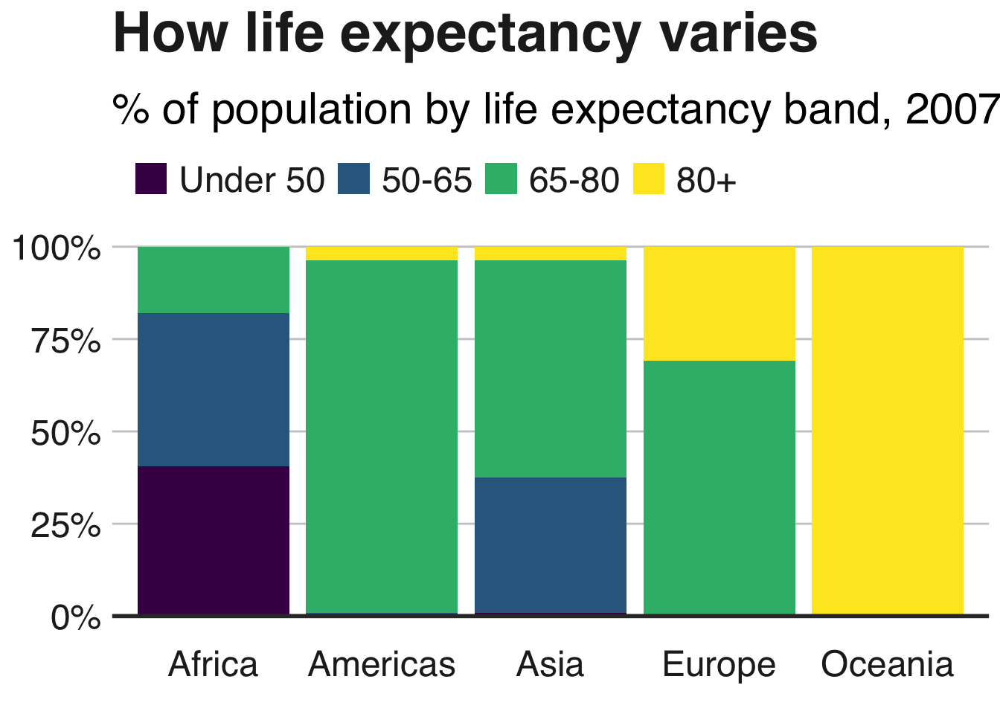

# install.packages('devtools')
# devtools::install_github('bbc/bbplot')
# if(!require(pacman))install.packages("pacman")
pacman::p_load('dplyr', 'tidyr', 'gapminder',
'ggplot2', 'ggalt',
'forcats', 'R.utils', 'png',
'grid', 'ggpubr', 'scales',
'bbplot')R Visualisation
KEEP LEARNING!
BBC-Style Graphics
Required Packages
Stacked Bar Chart
# Prepare Data
stacked_df <- gapminder %>%
filter(year == 2007) %>%
mutate(lifeExpGrouped = cut(lifeExp,
breaks = c(0, 50, 65, 80, 90),
labels = c("Under 50", "50-65", "65-80", "80+"))) %>%
group_by(continent, lifeExpGrouped) %>%
summarise(continentPop = sum(as.numeric(pop)))`summarise()` has grouped output by 'continent'. You can override using the
`.groups` argument.# Set order of stacks
stacked_df$lifeExpGrouped = factor(stacked_df$lifeExpGrouped, levels = rev(levels(stacked_df$lifeExpGrouped)))
# Create Plot
stacked_bars <- ggplot(data = stacked_df,
aes(x = continent,
y = continentPop,
fill = lifeExpGrouped)) +
geom_bar(stat = "identity",
position = "fill") +
bbc_style() +
scale_y_continuous(labels = scales::percent) +
scale_fill_viridis_d(direction = -1) +
geom_hline(yintercept = 0, size = 1, colour = "#333333") +
labs(title = "How life expectancy varies",
subtitle = "% of population by life expectancy band, 2007") +
theme(legend.position = "top",
legend.justification = "left") +
guides(fill = guide_legend(reverse = TRUE))
stacked_bars
# finalise_plot(plot_name = stacked_bars,
# source = "Source: Opinion Poll",
# save_filepath = "test.png",
# width_pixels = 640,
# height_pixels = 450)